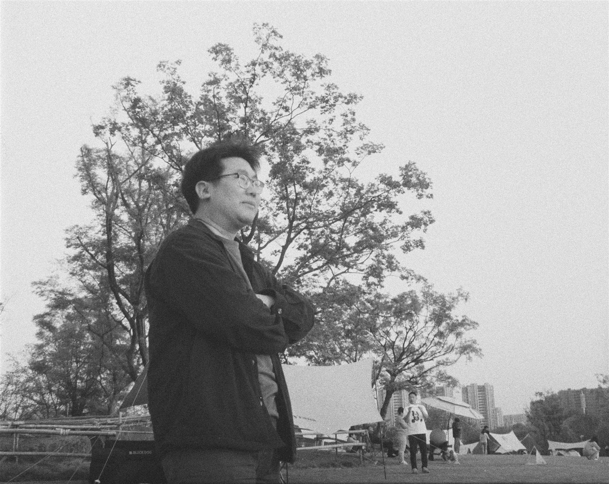

PHOTOGRAPHY EXHIBITION
像素回廊
PIXEL CORRIDOR · 一个人的摄影展
策展人：南山怪客 · 常年寻找好看的光

像素分身 · LV.99
关于南山怪客
—— 一个把相机当作时间存档机的人
你好，我是南山怪客。我拍得最多的主角是两只猫，它们叫团团圆圆；剩下的一半快门，给了运河体育公园的风、草地上的光斑，和一切被我称作「日常观看」的普通瞬间。
我不太追逐远方的奇观，取景框大多对准家附近一公里的温柔。拍完的照片在 Lightroom 里慢慢显影，再被挂进这间像素回廊——对我来说，这里不是相册，而是一间 24 小时开门的小画廊：策展人是我，观众是你。
如果某一张照片恰好击中了你，欢迎来小宇宙或公众号告诉我。那会是我下一次按下快门的理由。